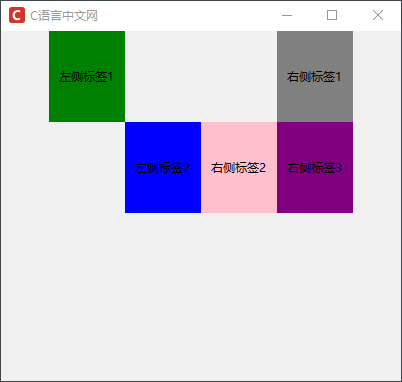
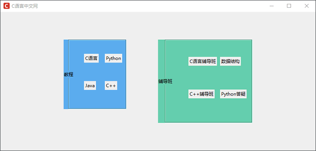
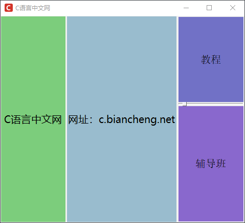
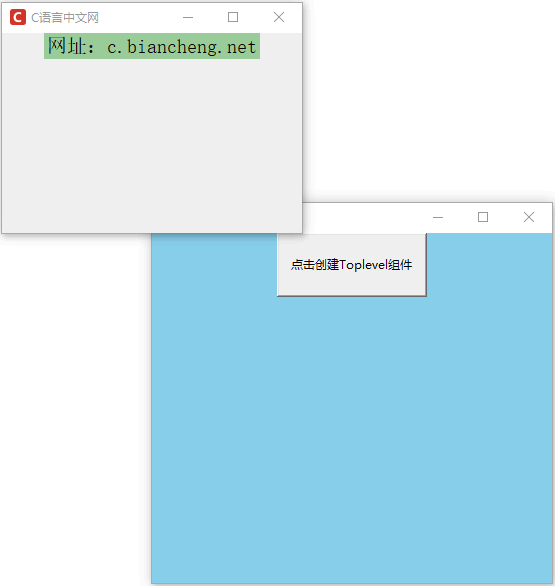

Tkinter布局管理控件
除了上一节《Tkinter布局管理方法》中提到的三个常用方法外，Tkinter 还提供了几个常用的布局管理控件，比如 Frame 、LabelFrame 等，这些控件的主要作用是为其他控件提供载体，并将主窗口界面划分成多个区域，从而方便开发者对不同区域进行设计与管理。
在前文讲解其他的 Tkinter 控件时，我们列举的大多数示例都是将控件直接放置在主窗口（即根窗口）内，这样做的目的是为了便于大家理解。但在实际的开发过程中，控件一般放置在容器中，比如 Frame 容器控件，如同 HTML 中的
本节介绍了四种常用的容器控件以及它们的使用方法，分别是 Frame、LabelFrame、PanedWindow 以及 Toplevel。
Frame 控件的常用属性如下表所示：
下面看一组简单的示例，通过 Frame 将主窗口分成左右两个部分，如下所示：
上述示例利用 Frame 控件将主窗口分成了左右两个子区域，同时在各自区域中添加了 Label 标签，而且区域之间互不干扰。采用这种分区、分块的布局方式，可以使得 GUI 程序更加规范、简洁化。
在默认情况下，LabelFrame 会在其包裹的子组件周围绘制一个边框和一个标题。当我们想要将一些相关的组件分为一组时，就可以使用 LabelFrame 组件，比如把一系列 Radiobutton（单选按钮）放在一起来供用户选择。
同 Frame 控件一样，LabelFrame 的主要作用也是对控件进行分组处理，下面看一个具体的实例：
与 Frame 控件不同， PanedWindow 允许用户自主地调整界面划分以及每块区域的大小。因此，当您需要让用户自己调节每块区域的大小时，就可以采用 PanedWindow 作为组件载体来进行界面的布局。
不仅如此 PanedWindow 组件还提供了“手柄” 功能（设置参数 showhandle=True 来启用），通过拖动“手柄”图标也可以改变每块区域的大小。PanedWindow 组件语法格式如下所示：
PanedWindow 的常用方法如下表所示：
下面示例设计一个简单的界面布局，然后将图形界面分割成四部分：创建一个水平方向的 PanedWindow，并向其中添加两个 Label 组件，之后创建一个垂直的方向的 PanedWindow，并向其中中添加两个 Label 标签。示例代码如下：
注意：从上述示例中可以看出 PanedWindw 会为每一个 Label 控件创建一个独立的窗格， 当我们将鼠标悬停在两个控件接壤处的白色边框上时，就会出现可以上下或者左右拉伸的指示光标，用户按照可以按照自己的意愿来调整每块区域的大小。
Toplevel 控件同样隶属于主窗口的子组件，只是存在形式特殊而已。Toplevel 是主窗口之外的弹出框窗口（通过事件来触发执行），在这个窗口内也可以包含其他组件。但需要注意，顶级窗口并不是必须位于窗口的顶部位置，之所以称其为顶级窗口，是因为相对于主窗口而言，Topleve 位于主窗口的上一层。
Toplevel 控件拥有根窗口控件的所有方法和属性，同时它还拥有一些独有的方法，如下表所示：
下面看一组关于创建 Toplevel 的示例，如下所示：
在前文讲解其他的 Tkinter 控件时，我们列举的大多数示例都是将控件直接放置在主窗口（即根窗口）内，这样做的目的是为了便于大家理解。但在实际的开发过程中，控件一般放置在容器中，比如 Frame 容器控件，如同 HTML 中的
<div>标签一样，把容器看做成一个框架，其他控件则是这个框架中的“元素”。本节介绍了四种常用的容器控件以及它们的使用方法，分别是 Frame、LabelFrame、PanedWindow 以及 Toplevel。
Frame控件
Frame 本质上也是一个矩形窗体，同其他控件一样也需要位于主窗口内。我们可以在主窗口内放置多个 Frame 控件，并且每个 Frame 中还可以嵌套一个或者多个Frame，从而将主窗口界面划分成多个区域。Frame 控件的常用属性如下表所示：
| 属性 | 说明 |
|---|---|
| bg | 设置 Frame 的背景颜色 |
| bd | 指定 Frame 的边框宽度 |
| colormap | 指定 Frame 组件及其子组件的颜色映射 |
| container | 布尔值参数，若参数值为 True，则窗体将被用作容器使用，一些其他程序也可以被嵌入。 |
| cursor | 指定鼠标在 Frame 上飘过的鼠标样式，默认由系统指定 |
| height/width | 设置 Frame 的高度和宽度 |
| highlightbackground | 指定当 Frame 没有获得焦点的时候高亮边框的颜色，通常由系统指定为标准颜色 |
| highlightcolor | 指定当 Frame 获得焦点的时候高亮边框的颜色 |
| highlightthickness | 指定高亮边框的宽度，默认值是 0 |
| padx/pady | 距离主窗口在水平/垂直方向上的外边距 |
| relief | 指定边框的样式，参数值 "sunken"，"raised"，"groove" 或 "ridge"，"flat"，默认为 "falt' |
| takefocus | 布尔值参数，默认为 False，指定该组件是否接受输入焦点（即用户通过 Tab 键将焦点转移上来） |
下面看一组简单的示例，通过 Frame 将主窗口分成左右两个部分，如下所示：
import tkinter as tk
win = tk.Tk()
win.title("C语言中文网")
win.geometry('400x350+200+200')
win.iconbitmap('C:/Users/Administrator/Desktop/C语言中文网logo.ico')
# 在主窗口上添加一个frame控件
frame1 = tk.Frame(win)
frame1.pack()
# 在frame_1上添加另外两个frame， 一个在靠左，一个靠右
#左侧的frame
frame_left = tk.Frame(frame1)
tk.Label(frame_left,text='左侧标签1',bg='green',width=10,height=5).grid(row =0,column=0)
tk.Label(frame_left,text='左侧标签2',bg='blue',width=10,height=5).grid(row = 1 ,column =1)
frame_left.pack(side=tk.LEFT)
frame_right = tk.Frame(frame1)
tk.Label(frame_right,text='右侧标签1',bg='gray',width=10,height=5).grid(row = 0 ,column =1)
tk.Label(frame_right,text='右侧标签2',bg='pink',width=10,height=5).grid(row = 1 ,column =0)
tk.Label(frame_right,text='右侧标签3',bg='purple',width=10,height=5).grid(row= 1,column=1)
frame_right.pack(side=tk.RIGHT)
win.mainloop()
程序运行结果：

图1：Frame控件布局管理
图1：Frame控件布局管理
上述示例利用 Frame 控件将主窗口分成了左右两个子区域，同时在各自区域中添加了 Label 标签，而且区域之间互不干扰。采用这种分区、分块的布局方式，可以使得 GUI 程序更加规范、简洁化。
LabelFrame控件
LabelFrame 控件也是一种容器类型的控件，它属于是 Frame 控件的变体，因此它们的属性选项大体相同。在默认情况下，LabelFrame 会在其包裹的子组件周围绘制一个边框和一个标题。当我们想要将一些相关的组件分为一组时，就可以使用 LabelFrame 组件，比如把一系列 Radiobutton（单选按钮）放在一起来供用户选择。
同 Frame 控件一样，LabelFrame 的主要作用也是对控件进行分组处理，下面看一个具体的实例：
import tkinter as tk
win = tk.Tk()
win.title("C语言中文网")
win.geometry('800x350+200+200')
win.iconbitmap('C:/Users/Administrator/Desktop/C语言中文网logo.ico')
# 定义第一个容器，使用 labelanchor ='w' 来设置标题的方位
frame_left = tk.LabelFrame(win, text="教程", labelanchor="w",bg='#5CACEE')
# 使用 place 控制 LabelFrame 的位置
frame_left.place(relx=0.2, rely=0.2, relwidth=0.2, relheight=0.5)
label_1 = tk.Label(frame_left, text="C语言")
label_1.place(relx=0.2, rely=0.2)
label_2 = tk.Label(frame_left, text="Python")
label_2.place(relx=0.6, rely=0.2)
label_3 = tk.Label(frame_left, text="Java")
label_3.place(relx=0.2, rely=0.6)
label_4 = tk.Label(frame_left, text="C++")
label_4.place(relx=0.6, rely=0.6)
# 定义第二个容器，使用 labelanchor ='w' 来设置标题的方位
frame_right = tk.LabelFrame(win, text="辅导班", labelanchor="w",bg='#66CDAA')
# 使用 place 控制 LabelFrame 的位置
frame_right.place(relx=0.5, rely=0.2, relwidth=0.3, relheight=0.6)
label_1 = tk.Label(frame_right, text="C语言辅导班")
label_1.place(relx=0.2, rely=0.2)
label_2 = tk.Label(frame_right, text="数据结构")
label_2.place(relx=0.6, rely=0.2)
label_3 = tk.Label(frame_right, text="C++辅导班")
label_3.place(relx=0.2, rely=0.6)
label_4 = tk.Label(frame_right, text="Python答疑")
label_4.place(relx=0.6, rely=0.6)
win.mainloop()
程序运行结果：

图2：LabelFrame容器控件
图2：LabelFrame容器控件
PanedWindow控件
PanedWindow（窗格界面）也可以理解成一个特殊的 Frame 控件，它是 Tkinter 8.4 版本后新增的空间管理组件，其主要目的是为其他组件提供一个容器或者框架，从而实现以分块的形式对图形界面进行布局。与 Frame 控件不同， PanedWindow 允许用户自主地调整界面划分以及每块区域的大小。因此，当您需要让用户自己调节每块区域的大小时，就可以采用 PanedWindow 作为组件载体来进行界面的布局。
不仅如此 PanedWindow 组件还提供了“手柄” 功能（设置参数 showhandle=True 来启用），通过拖动“手柄”图标也可以改变每块区域的大小。PanedWindow 组件语法格式如下所示：
PanedWindow(master=None, **options)其中 master 表示父组件，即包裹该组件的上层组件。其常用属性如下表所示：
| 属性 | 说明 |
|---|---|
| handlepad |
1. 调节“手柄”的位置 2. 比如当 orient ='vertical' 设置垂直时，handlepad 表示“分割线”上的手柄与左端的距离，默认为 8 像素 |
| handlesize | 设置“手柄”的尺寸（由于“手柄”必须是一个正方形，所以是设置正方形的边长）默认为 8 像素 |
| opaqueresize |
1. 该选项定义了用户调整窗格尺寸的操作，如果该选项的值为 True（默认），窗格的尺寸随用户鼠标的拖拽而改变 2. 如果该选项的值为 False，那么窗格的尺寸，在用户释放鼠标时才会更新到新的位置上 |
| orient | 指定窗格的分布方式，默认为水平方向分布（"horizontal"），或者还可以设置为垂直纵向分布（"vertical"） |
| relif | 指定边框的样式，默认为 "flat"，还可以设置为 "sunken"，"raised"，"groove" 或 "ridge" |
| sashpad | 设置每一条分割线到窗格间的间距 |
| sashrelief | 设置分割线的样式，默认值是："flat"，还可以设置 "sunken"，"raised"，"groove" 或 "ridge" |
| sashwidth | 设置分割线的宽度 |
| showhandle | 设置是否显示调节窗格的手柄，默认为 False |
| height/width | 设置 PanedWindow 的高度、宽度，若不设置，则其大小由其子组件的尺寸决定 |
PanedWindow 的常用方法如下表所示：
| 方法 | 说明 |
|---|---|
| add(child) | 添加一个新的子组件到窗格中语法格式 add(child,**option)，参数值 after、before、sticky |
| forget(child) | 删除一个子组件 |
| panecget(child, option) | 获得子组件指定选项的值 |
| paneconfig(child, **options) | 设置子组件的各种选项 |
| panes() | 将父组件中包含的子组件以列表的形式返回 |
| sash_coord(index) | 返回一个二元组表示指定分割线的起点坐标 |
| sash_place(index, x, y) | 将指定的分割线移动到一个新的位置 |
下面示例设计一个简单的界面布局，然后将图形界面分割成四部分：创建一个水平方向的 PanedWindow，并向其中添加两个 Label 组件，之后创建一个垂直的方向的 PanedWindow，并向其中中添加两个 Label 标签。示例代码如下：
import tkinter as tk
win = tk.Tk()
win.title("C语言中文网")
win.geometry('400x400+200+200')
win.iconbitmap('C:/Users/Administrator/Desktop/C语言中文网logo.ico')
# 创建一个水平方向的 panedwindow，并添加到主窗口中，默认为水平方向
p_window1 = tk.PanedWindow(win)
p_window1.pack(fill=tk.BOTH, expand=1)
# 在窗口区的左侧添加两个水平方向的 Label
left1 =tk. Label(p_window1, text='C语言中文网', bg='#7CCD7C', width=10,font=('微软雅黑',15))
p_window1.add(left1)
left2 =tk.Label(p_window1, text='网址：c.biancheng.net', bg='#9AC0CD', width=10,font=('微软雅黑',15))
p_window1.add(left2)
# 创建一个垂直方向的panedwindow,并添加一个手柄，设置分割线样式
p_window2 = tk.PanedWindow(orient=tk.VERTICAL,showhandle=True,sashrelief='sunken')
# 添加到 p_window1中
p_window1.add(p_window2)
# 在 p_window2 中添加两个垂直方向的标签
top_label =tk. Label(p_window2, text='教程', bg='#7171C6', height=8,font=('宋体',15))
p_window2.add(top_label)
bottom_label =tk. Label(p_window2, text='辅导班', bg='#8968CD',font=('宋体',15))
p_window2.add(bottom_label)
win.mainloop()
程序运行结果：

图3：PanedWindow空间布局
图3：PanedWindow空间布局
注意：从上述示例中可以看出 PanedWindw 会为每一个 Label 控件创建一个独立的窗格， 当我们将鼠标悬停在两个控件接壤处的白色边框上时，就会出现可以上下或者左右拉伸的指示光标，用户按照可以按照自己的意愿来调整每块区域的大小。
Toplevel控件
Topleve 是一个顶级窗口控件（也被称为“子窗体”控件），同样类似于 Frame 控件， 不过该控件会脱离根窗口另行创建一个独立窗口，因此它的存在形式不同于上述其他容器。Toplevel 控件同样隶属于主窗口的子组件，只是存在形式特殊而已。Toplevel 是主窗口之外的弹出框窗口（通过事件来触发执行），在这个窗口内也可以包含其他组件。但需要注意，顶级窗口并不是必须位于窗口的顶部位置，之所以称其为顶级窗口，是因为相对于主窗口而言，Topleve 位于主窗口的上一层。
Toplevel 控件拥有根窗口控件的所有方法和属性，同时它还拥有一些独有的方法，如下表所示：
| 方法 | 说明 |
|---|---|
| deiconify() | 在使用 iconify() 或 withdraw() 方法后，即窗口最小化和移除窗口后（只是看不见，并没销毁），使用该方法来显示该窗口 |
| frame() | 返回一个系统特定的窗口识别码 |
| group(window) | 将顶级窗口加入 window 窗口群组中，如果忽略该参数，将返回当前窗口群的主窗口 |
| iconify() | 将窗口图标化（最小化），需要重新显示窗口，使用 deiconify() 方法 |
| protocol(name, function) |
将回调函数 function 与相应的规则 name 绑定； 1) name 参数可以是 "WM_DELETE_WINDOW"：窗口被关闭的时候； 2) name 参数可以是 "WM_SAVE_YOURSELF"：窗口被保存的时候； 3) name 参数可以是 "WM_TAKE_FOCUS"：窗口获得焦点的时候。 |
| state() | 设置和获得当前窗口的状态，参数值 "normal"（正常状态），"withdrawn（移除窗口）"，"icon"（最小化）和 "zoomed"（放大） |
| transient(master) | 指定为 master 的临时窗口 |
| withdraw() | 将窗口从屏幕上移除，只是移动到了窗口之外，并没销毁，需要重新显示窗口，使用 deiconify() 方法 |
下面看一组关于创建 Toplevel 的示例，如下所示：
import tkinter as tk
root = tk.Tk()
root.config(bg='#87CEEB')
root.title("C语言中文网")
root.geometry('400x350+300+300')
root.iconbitmap('C:/Users/Administrator/Desktop/C语言中文网logo.ico')
def create_toplevel():
top = tk.Toplevel()
top.title("C语言中文网")
top.geometry('300x200+100+100')
top.iconbitmap('C:/Users/Administrator/Desktop/C语言中文网logo.ico')
# 多行文本显示Message控件
msg = tk.Label(top, text="网址：c.biancheng.net",bg='#9BCD9B',font=('宋体',15))
msg.pack()
tk.Button(root, text="点击创建Toplevel组件", width=20,height=3,command=create_toplevel).pack()
root.mainloop()
程序的运行结果如下：

图4：Toplevel组件创建顶级窗口
图4：Toplevel组件创建顶级窗口
关注公众号「站长严长生」，在手机上阅读所有教程，随时随地都能学习。内含一款搜索神器，免费下载全网书籍和视频。

微信扫码关注公众号